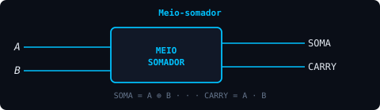
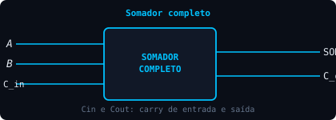
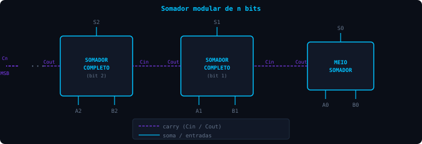
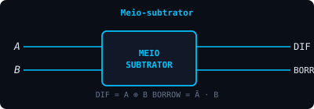
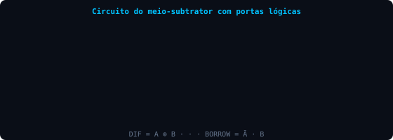

Sistemas digitais são projetados para realizar uma variedade de operações aritméticas com bits. Uma das operações mais comuns é a adição binária.
4.1 / meio-somador
Meio-somador
A operação de adição de dois bits é dada por:
| + | 0 | 1 |
|---|---|---|
| 0 | 0 | 1 |
| 1 | 1 | 10 |
Uma abordagem para projetar um circuito somador é modularizar o circuito. O módulo relativo à soma dos bits menos significativos de dois números A e B de n bits é chamado de meio-somador.
A tabela-verdade da soma de dois bits A e B é:
| A | B | SOMA | CARRY |
|---|---|---|---|
| 0 | 0 | 0 | 0 |
| 0 | 1 | 1 | 0 |
| 1 | 0 | 1 | 0 |
| 1 | 1 | 0 | 1 |
Obtendo a expressão booleana e minimizando:
O meio-somador é representado logicamente pela figura ao lado.

Fig. 4.1 — Meio-somador
4.2 / somador completo
Somador completo
O somador completo apresenta o comportamento descrito pela tabela-verdade abaixo, onde $C_{in}$ e $C_{out}$ representam respectivamente o carry de entrada e o carry de saída:
| A | B | Cin | SOMA | Cout |
|---|---|---|---|---|
| 0 | 0 | 0 | 0 | 0 |
| 0 | 0 | 1 | 1 | 0 |
| 0 | 1 | 0 | 1 | 0 |
| 0 | 1 | 1 | 0 | 1 |
| 1 | 0 | 0 | 1 | 0 |
| 1 | 0 | 1 | 0 | 1 |
| 1 | 1 | 0 | 0 | 1 |
| 1 | 1 | 1 | 1 | 1 |

Fig. 4.2 — Somador completo
De modo similar ao meio-somador, pode-se obter a expressão booleana relativa a cada saída e, a partir dela, os respectivos circuitos com portas lógicas.
4.3 / somador de n bits
Somador de n bits
Um somador de dois números binários A e B de n bits pode ser implementado modularmente, utilizando o cascateamento de 1 meio-somador e n-1 somadores completos.
- O meio-somador realiza a adição dos dígitos menos significativos $A_0$ e $B_0$.
- O carry do meio-somador é transportado para o módulo seguinte.
- A soma do meio-somador é o dígito menos significativo do resultado, $S_0$.
- No somador completo seguinte, as entradas A e B recebem $A_1$ e $B_1$, e $C_{in}$ recebe o carry do meio-somador.
- A saída do primeiro somador completo é $S_1$. Nos módulos seguintes a arquitetura se repete.

Fig. 4.3 — Somador modular de n bits
O dígito mais significativo da soma é o carry do último módulo.
4.4 / ci somador
CI Somador
4.4.1 Circuitos integrados digitais (CIs)
O chip é um conjunto de elementos eletrônicos integrados em um substrato semicondutor, encapsulados em uma embalagem protetora (por exemplo, DIP).

Fig. 4.4 — (a) Pinagem do chip · (b) Chanfro indicando a numeração
A figura (a) evidencia a pinagem do chip, através da qual são estabelecidas as conexões. A figura (b) indica o chanfro (entalhe) que indica a numeração da pinagem.
Grau de integração
A quantidade de elementos integrados define o grau de integração, conforme o número de portas no substrato:
4.4.2 Somadores integrados
Fabricantes como a National Semiconductor integram e encapsulam somadores em chips identificados por um código — por exemplo, 54LS283. Ver o datasheet do 74LS283 →
| Característica | Descrição |
|---|---|
| Pinagem | 16 pinos |
| Entradas lógicas | A (4 bits), B (4 bits) e C0 |
| Saídas lógicas | $\Sigma$ (4 bits) e C4 |
| Alimentação ($V_{CC}$) | 5 volts (nominal) |
O 54LS283 pode ser cascateado utilizando os pinos de carry de entrada e saída, da mesma forma que na construção modular com meio-somador e somadores completos.

Fig. 4.5 — Cascateamento de somadores de 4 bits
4.4.3 Somador BCD (Binary-Coded Decimal)
Uma das formas de implementar eletronicamente números decimais é utilizar módulos que representam somente os dígitos decimais em sua forma binária:
| Palavra | Decimal |
|---|---|
| 0000 | 0 |
| 0001 | 1 |
| 0010 | 2 |
| 0011 | 3 |
| 0100 | 4 |
| 0101 | 5 |
| 0110 | 6 |
| 0111 | 7 |
| 1000 | 8 |
| 1001 | 9 |
A soma BCD é realizada em grupos de 4 bits. Quando a soma é inferior a 9, a operação é de binário puro:
45 + 33 = 78 → (5+3) 0101+0011=1000 · (4+3) 0100+0011=0111 ✓
Quando a soma resulta maior que 9 ($1001_2$), é necessário somar o resultado ao complemento $C(1001) = 0110$:
→ 1101 + 0110 = 1 0011 → carry=1, soma=0011
O somador BCD implementa a soma de cada dígito decimal, transportando o carry, reproduzindo exatamente a soma decimal:

Fig. 4.6 — Somador BCD: A e B são os dígitos decimais, Σ é a saída, carry transportado entre dezenas, centenas...
4.5 / subtratores
Subtratores
A subtração binária é dada por:
| − | 0 | 1 |
|---|---|---|
| 0 | 0 | 1 |
| 1 | 11 | 0 |
A subtração binária normalmente é realizada pela adição do minuendo ao complemento de 1 ou complemento de 2 do subtraendo.
Normalmente não se implementa computacionalmente a operação de subtração. No entanto, caso seja necessário, pode-se adotar o mesmo método da adição, com o meio-subtrator e o subtrator completo.
A tabela-verdade do meio-subtrator é:
| A | B | A−B | BORROW |
|---|---|---|---|
| 0 | 0 | 0 | 0 |
| 0 | 1 | 1 | 1 |
| 1 | 0 | 1 | 0 |
| 1 | 1 | 0 | 0 |
Obtendo a expressão booleana e minimizando:

Fig. 4.7 — Meio-subtrator
O meio-subtrator é representado logicamente pela figura ao lado.
O circuito com portas lógicas é apresentado abaixo:

Fig. 4.8 — Circuito do meio-subtrator com portas lógicas
De modo similar ao somador completo, pode-se desenvolver o subtrator completo, descrito pela tabela-verdade, onde $B_{in}$ e $B_{out}$ representam respectivamente o borrow de entrada e de saída:
| A | B | Bin | DIF | Bout |
|---|---|---|---|---|
| 0 | 0 | 0 | 0 | 0 |
| 0 | 0 | 1 | 1 | 1 |
| 0 | 1 | 0 | 1 | 1 |
| 0 | 1 | 1 | 0 | 1 |
| 1 | 0 | 0 | 1 | 0 |
| 1 | 0 | 1 | 0 | 0 |
| 1 | 1 | 0 | 0 | 0 |
| 1 | 1 | 1 | 1 | 1 |
O subtrator completo é representado por uma figura similar à do somador completo, com as devidas substituições.
Um subtrator de dois números binários A e B de n bits pode ser implementado modularmente, utilizando o cascateamento de 1 meio-subtrator e n-1 subtratores completos.
checkpoint
Teste seus conhecimentos
Por que o meio-somador não pode, por si só, formar um somador de n bits?
Na soma BCD 6+7=13, qual correção é necessária?
A expressão BORROW do meio-subtrator é igual a:
referências e aprofundamento